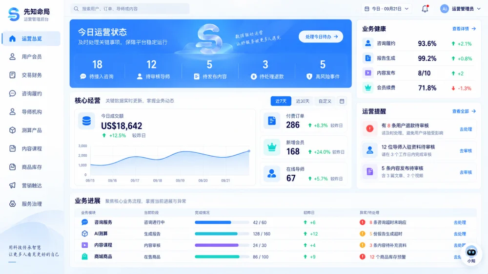
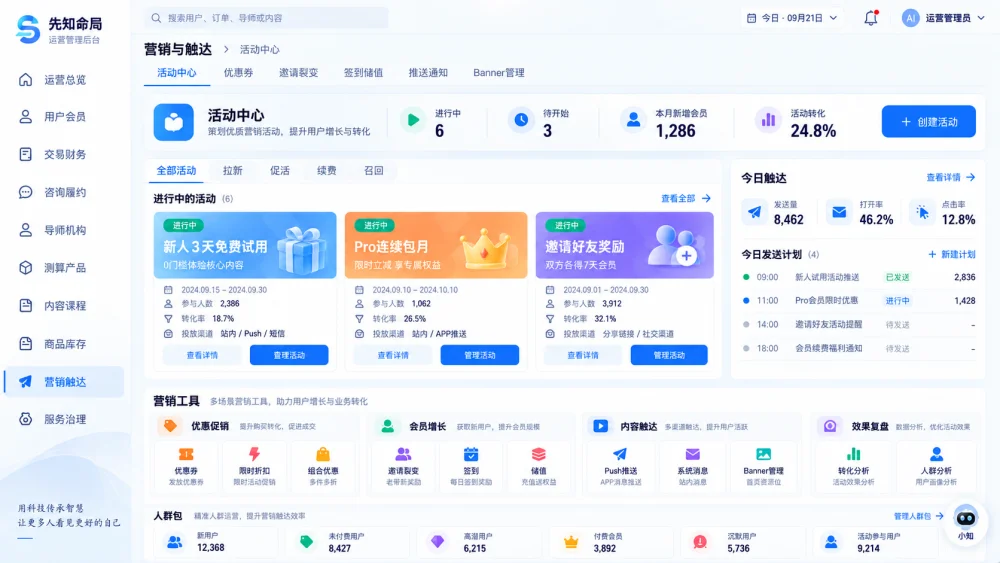
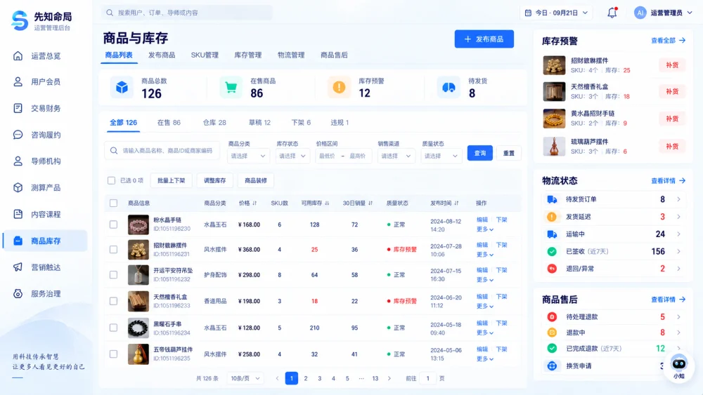
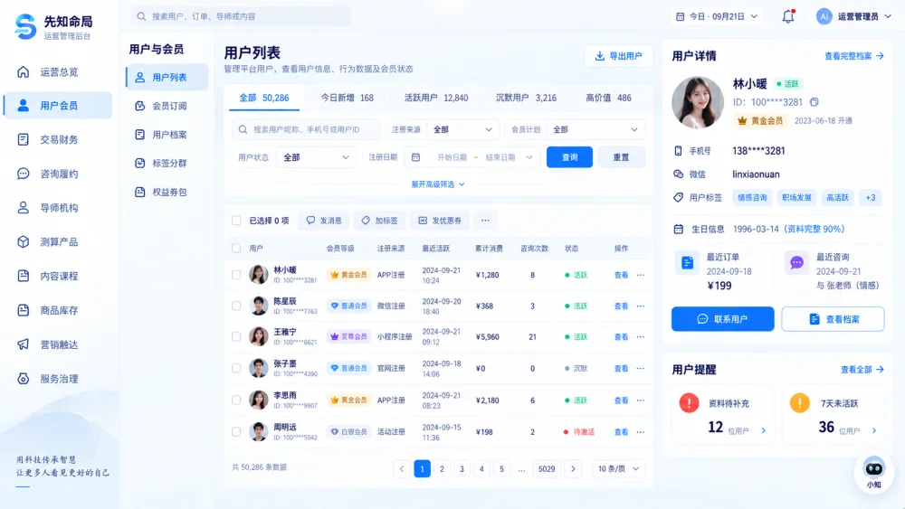
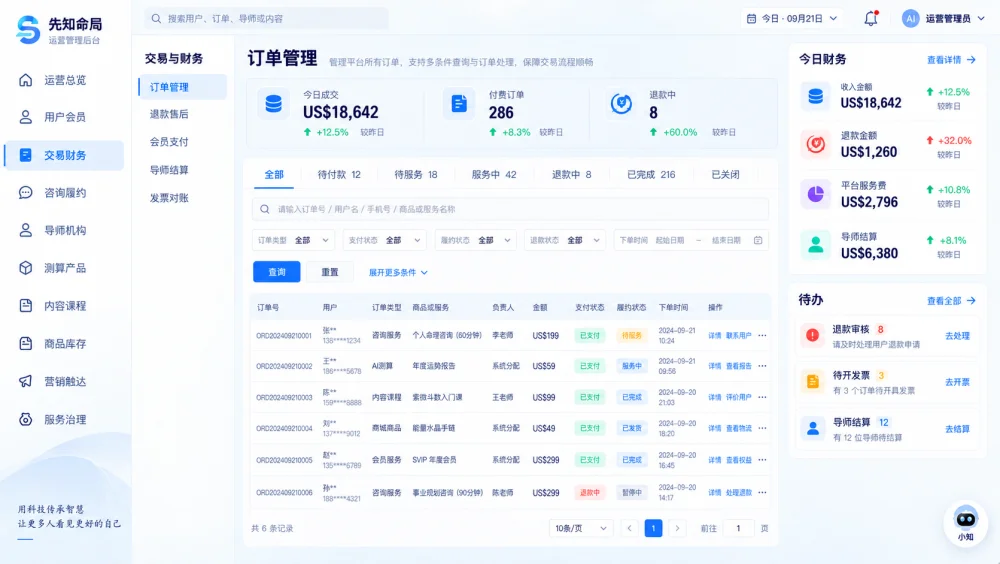
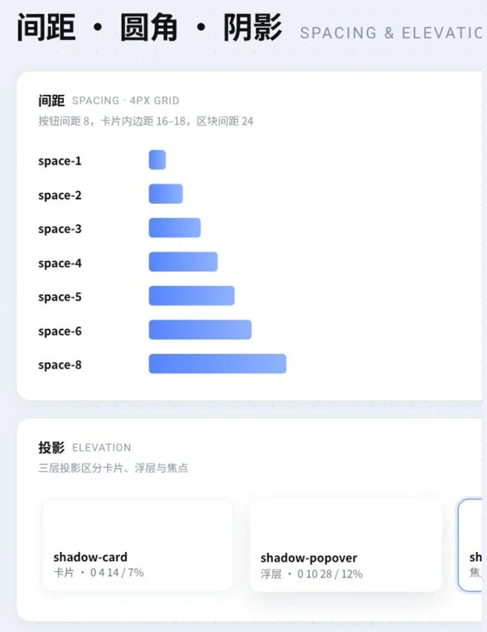
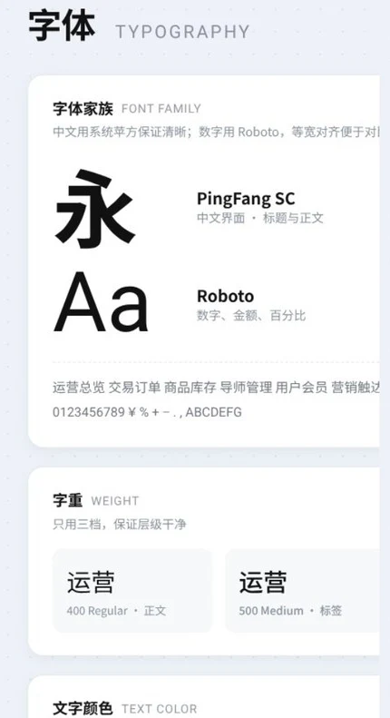
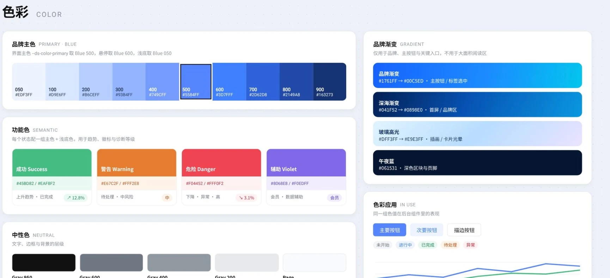

小知智能后台
从设计方案到可交互原型的 AI 协作实践
围绕平台日常运营场景，通过设计判断、AI 编码和浏览器验证，逐步将设计方案转化为可实际操作的后台交互原型。
制作过程以业务需求和视觉参考为输入，通过多轮页面调整、组件统一与交互补全，将设计方案转化为能够直接打开、浏览和操作的网页。

协作方式：设计确定方向，AI 推进实现
- 设计判断
- 确定业务重点、选择视觉参考、调整信息层级、制定组件规范、评价实际体验
- AI 执行
- 读取项目、分析页面结构、编写和修改代码、接入素材、实现交互、检查浏览器表现
- 反馈与验收
- 通过截图批注和实际操作定位问题，将反馈转化为修改要求，再检查修改结果
整个过程形成了持续迭代的工作方式
- 提出需求
- 分析方案
- 实现页面
- 实际体验
- 标注问题
- 修改与复查
01梳理业务场景，建立后台的信息结构
后台首先需要明确各个页面承担的任务，以及页面之间如何连接。
运营总览负责呈现经营情况与待办事项；交易页面聚焦订单与退款；商品页面组织商品和库存；会员、营销、导师等模块分别承接对应的运营任务。
围绕“查看经营情况、发现问题、进入业务模块、筛选记录、查看详情和处理事项”的路径，确定导航关系、信息优先级与操作入口。
AI 结合现有页面和代码核对功能，设计要求则持续明确每个页面应该突出什么。例如，交易页面以订单处理为核心，商品页面同时兼顾库存判断和商品管理。
阶段产出业务模块划分、页面关系与主要操作路径。
02拆解参考图，把视觉方向转化为实现要求
拆解参考图的布局、比例与信息层级，将视觉方向转化为页面实现要求。






03建立共同基准，让不同页面保持一致



04补齐操作路径，让界面能够实际体验
视觉布局完成后，继续围绕具体任务补充交互。
原生 HTML、CSS 和 JavaScript 分别承担页面结构、视觉表现和交互逻辑。导航切换、搜索筛选、详情抽屉、确认弹窗与反馈提示被连接到本地演示数据。
其中，商品页面支持搜索、分类筛选、编辑、补货、上下架、分页和导出；会员页面支持档案查看、编辑、批量选择和导出；交易页面支持订单详情、备注与退款确认；营销页面支持活动创建和编辑。
这些操作能够呈现本地状态变化，使页面可以通过实际使用检查流程是否清楚、反馈是否及时。
05设计小知助手，补全对话的各个状态
小知运营助手作为跨页面入口，提供欢迎态、快捷问题、输入发送、思考状态与回复操作。
对话体验被拆解为连续的状态：首次打开时说明可提问内容；发送后显示思考反馈；回复出现后提供复制、重试与评价；新建对话和本页历史记录支持继续体验。
制作过程中，针对发送时弹窗移动、答案出现过快等问题，进一步明确了交互要求：保持对话面板位置稳定，通过发送按钮和三点加载动画表达处理过程，再展示演示回复。
机器人形象、纸飞机图标、输入区域和淡色背景装饰也经过多轮调整，使助手与后台整体视觉保持协调。
阶段产出包含完整会话操作状态的小知对话原型。
- 欢迎与快捷问题
- 输入与发送
- 思考反馈
- 回复与评价
- 新建与历史
06通过截图批注，将设计判断转化为具体修改
页面实现后，持续通过浏览器预览、截图与区域批注发现问题。反馈从整体布局逐步深入到组件细节。
典型调整包括：
- 导航图标默认使用线性样式，选中后切换为蓝色实心样式。
- 指标图标统一尺寸，并在底座内居中。
- 表格表头取消整块背景，分隔线收进内容区域。
- “查看更多”、导出按钮和时间切换控件统一表现。
- 迷你柱状图增加悬浮数值，金额、比例和数量分别使用对应格式。
每条反馈都明确修改对象、问题和目标状态，AI 据此定位对应代码并执行调整。涉及共享组件的修改，再检查其他页面是否同步生效或受到影响。
阶段产出经过多轮细节校正的界面，以及可跨页面复用的规则。
07调整动效范围，让反馈服务于阅读和操作
动效围绕图表、按钮、图标和对话状态逐步加入。
柱状图采用生长效果，折线图采用绘制效果，圆环图采用短暂旋转，主要图表动画控制在约 0.5 秒。悬浮数值和按钮反馈帮助识别当前操作对象。
实际体验中，较多的页面进入动画影响了界面稳定感，打开小知时背景卡片跟随运动也被提出修正。动效方向因此逐步收敛到卡片内部图表和局部操作反馈，并要求卡片容器保持稳定。
同时加入系统“减少动态效果”的适配规则，支持降低动画强度。
阶段产出以图表变化和操作反馈为重点的动效规则。
08在浏览器中验证，整理可继续迭代的交付
最终检查同时覆盖视觉和操作。
桌面与移动端分别核对卡片比例、文字换行、图标位置和页面溢出；宽表格采用内部横向滚动，保证窄屏下仍能查看完整内容。
交互检查覆盖搜索、筛选、分页、趋势切换、快捷导航、图表数值提示与助手发送状态。验证过程中发现的助手遮挡操作入口、图表留白和跨页面样式影响等问题，继续回到代码中修正。
项目随后整理为后台入口、设计系统、素材和说明文档，并保存各业务页面截图，推送至 GitHub 私人仓库。
阶段产出可运行的本地项目、页面截图、设计规范与验证记录。